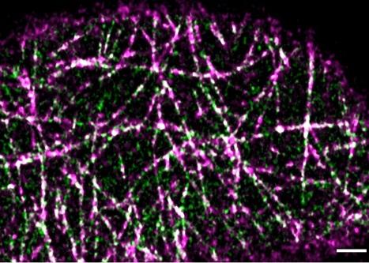
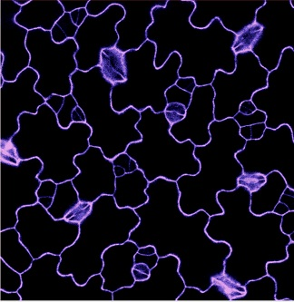
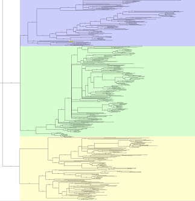
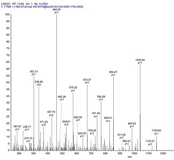
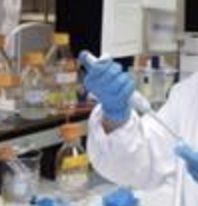
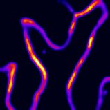
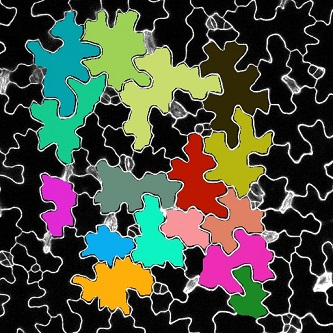

Welcome to the Pan Lab! We investigate how lipid metabolism, protein lipidation, and plasma membrane organization regulate cell signaling, plant development, and responses to environmental change. Our goal is to uncover fundamental principles of membrane-based regulation and harness this knowledge to develop more resilient crops.
To address these questions, we take a multidisciplinary approach that integrates advanced live-cell imaging, including total internal reflection fluorescence (TIRF) microscopy and high-throughput single-particle tracking, with microfluidic technologies, molecular genetics, protein and lipid biochemistry, and evolutionary bioinformatics. Explore some of the key approaches we use to investigate membrane organization and signaling below.

Biochemical assays

Colocalization imaging and analysis

Confocal imaging of pavement cells

Evolutionary analysis

imaging of membrane lipid order

in vitro phosphorylation assays

lipid biochemistry

microfluidics-assisted imaging

molecular biology

protein-protein interaction studies

proteomics

quantitative analyses of pavement cell shape characteristics
TIRF imaging and single-particle tracking
Biochemical assays
Colocalization imaging and analysis
Confocal imaging of pavement cells
Evolutionary analysis
imaging of membrane lipid order
in vitro phosphorylation assays
lipid biochemistry
microfluidics-assisted imaging
molecular biology
protein-protein interaction studies
proteomics
quantitative analyses of pavement cell shape characteristics
TIRF imaging and single-particle tracking
Research Direction
1. Triacylglycerol Biosynthesis in Plant Growth and Environmental Adaptation
Beyond its classic role in seed oil storage, triacylglycerol (TAG) biosynthesis is emerging as an important regulator of plant growth and stress responses. Our lab investigates how TAG metabolism helps plants adjust their growth and architecture to changing environmental conditions. These responses have traditionally been studied mainly through hormone signaling, and the contribution of lipid metabolism to them remains comparatively underexplored. In our recent work (New Phytologist, 2026), we showed that high temperature induces the TAG biosynthetic enzyme DGAT2, which restrains auxin-driven hypocotyl elongation and modulates membrane lipid order. Auxin, in turn, suppresses DGAT2, revealing a reciprocal regulatory loop that helps constrain excessive growth. This DGAT2–auxin relationship is conserved between Arabidopsis and Camelina. Building on these findings, we are investigating how TAG biosynthesis connects lipid metabolism and membrane organization with hormone signaling across diverse environmental responses, with the goal of identifying lipid-based strategies to optimize plant growth and resilience.

Schematic diagram of triacylglycerol biosynthesis
2. Decoding the Role of Protein Palmitoylation in Nanodomain-Based Cell Signaling
Proteins and lipids in the plasma membrane (PM) are organized into dynamic nanoscale domains, known as PM nanodomains, whose composition and organization can change in response to developmental and environmental cues. These nanodomains can organize signaling components and modulate signaling activity, making them important regulators of plant growth, development, and stress responses. Understanding how PM nanodomains are regulated and how they contribute to cellular signaling is an emerging frontier in plant biology. Our lab focuses on protein S-acylation (often referred to as palmitoylation), a reversible lipid modification catalyzed by protein S-acyltransferases (PATs). We investigate how PATs regulate key growth- and stress-signaling proteins and how S-acylation contributes to their nanodomain organization, dynamics, and signaling activity. By uncovering the molecular principles governing nanodomain-based signaling, we aim to establish new strategies for engineering climate-resilient crops and supporting future food security.

TIRF imaging and single-particle tracking